가로 모드 · 튜토리얼 카드 시안
실제 게임 화면에 시안을 적용해 찍은 캡처입니다(밤 시간대라 화면이 어둡습니다). 세로 390×844 · 가로 844×390.
① 튜토리얼 안내 카드
문제: 진행 점 17개(환공포증 우려) · 카드가 커서 폰에서 화면을 가림 · 가로에선 캐릭터 바로 위를 덮음.
가로 844×390
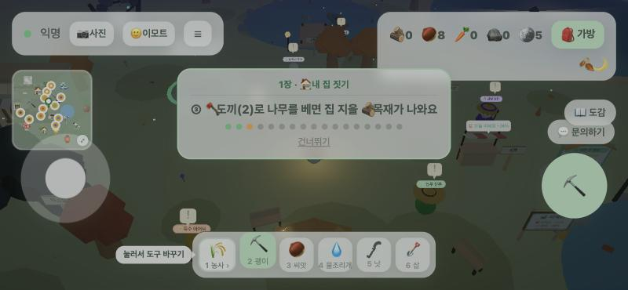
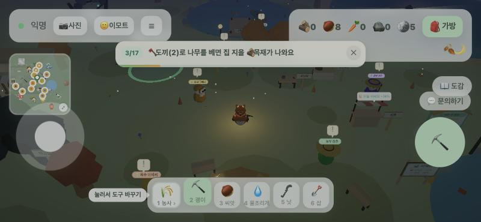
- 가장 얇음(높이 ≈44px)
- 숫자 3/17 + 바닥 진행선
- 건너뛰기는 ✕ — 장 목표 줄은 빠짐
- 지금 구조 그대로, 점 → 막대 1개
- 장 목표 줄 유지
- A보다 한 줄 큼
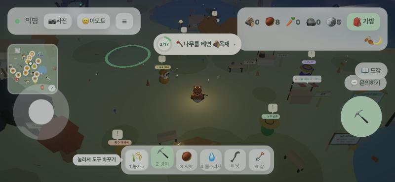
- 평소엔 작은 칩(링 진행 + 짧은 문구)
- 탭하면 펼쳐서 전체 문장
- 짧은 문구 17개를 새로 써야 함
세로 390×844
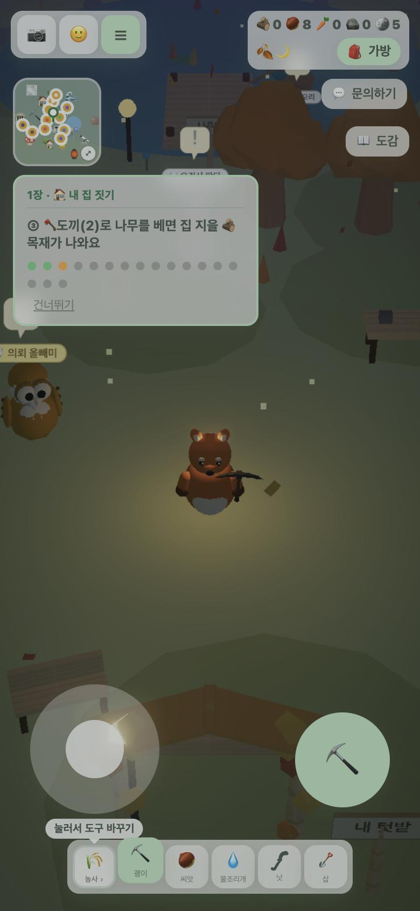
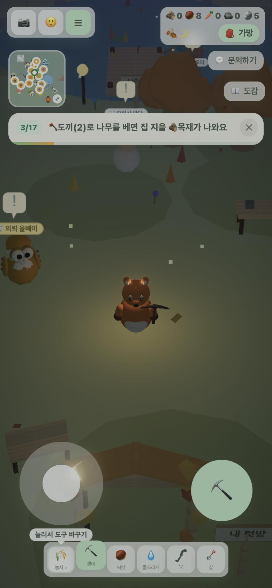
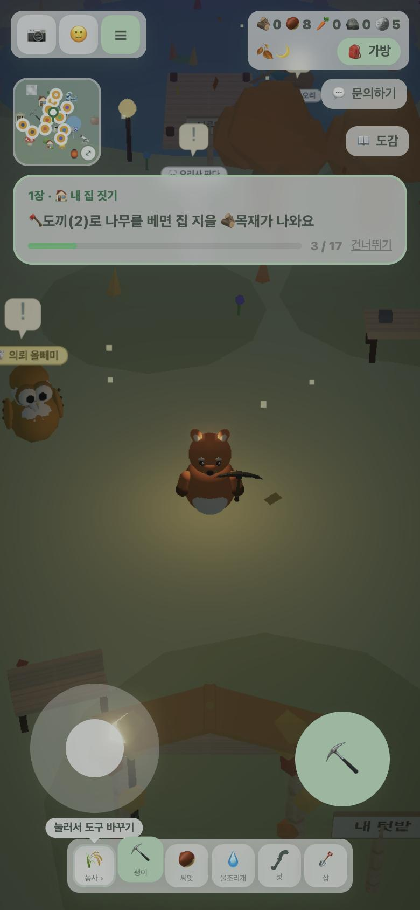
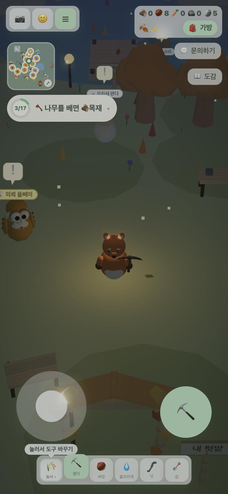
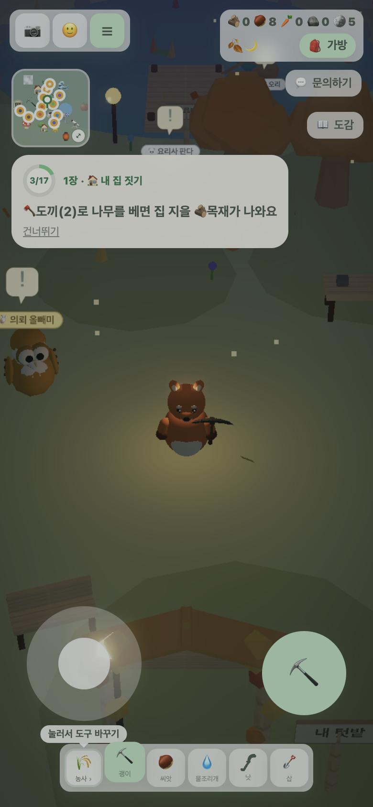
② 큰 창 배치 (가로) — 도감으로 예시, 문의하기·가방·상점 등에 같은 규칙
문제: PC 높이 기준이라 가로 폰에선 내용이 1줄 반만 보이고, 닫기 버튼·안내가 자리를 다 씀. 세 시안 모두 공통으로 ✕ 를 제목 줄로 올리고, 아래 닫기 버튼을 없애고, 안내 상자를 한 줄로 접었습니다.
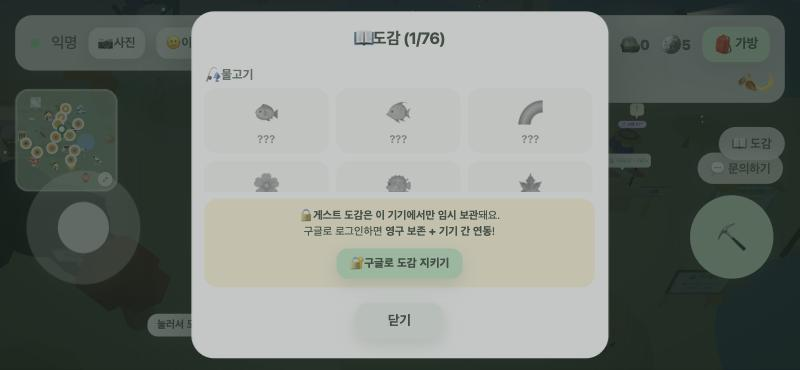
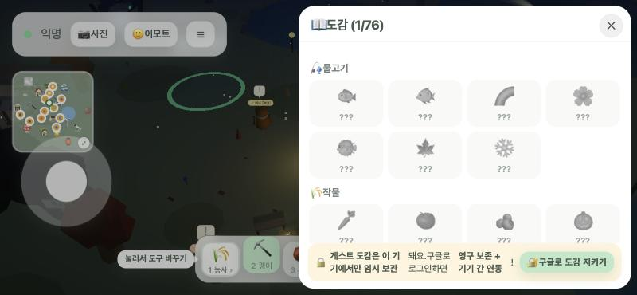
- 왼쪽 게임 화면이 보임
- 한 줄 4칸
- 폭이 절반이라 글이 긴 창은 줄바꿈 많음
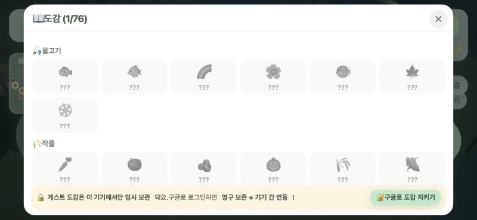
- 한 줄 6칸 — 지금 모양과 가장 비슷
- 세로 꽉 채움
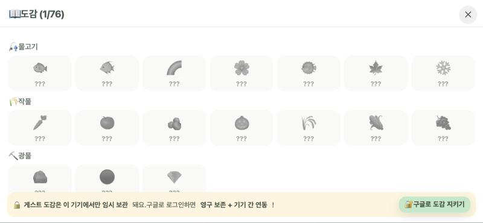
- 가장 많이 보임(한 줄 7칸)
- 노치 좌우 여백 반영
- 게임 화면이 완전히 가려짐